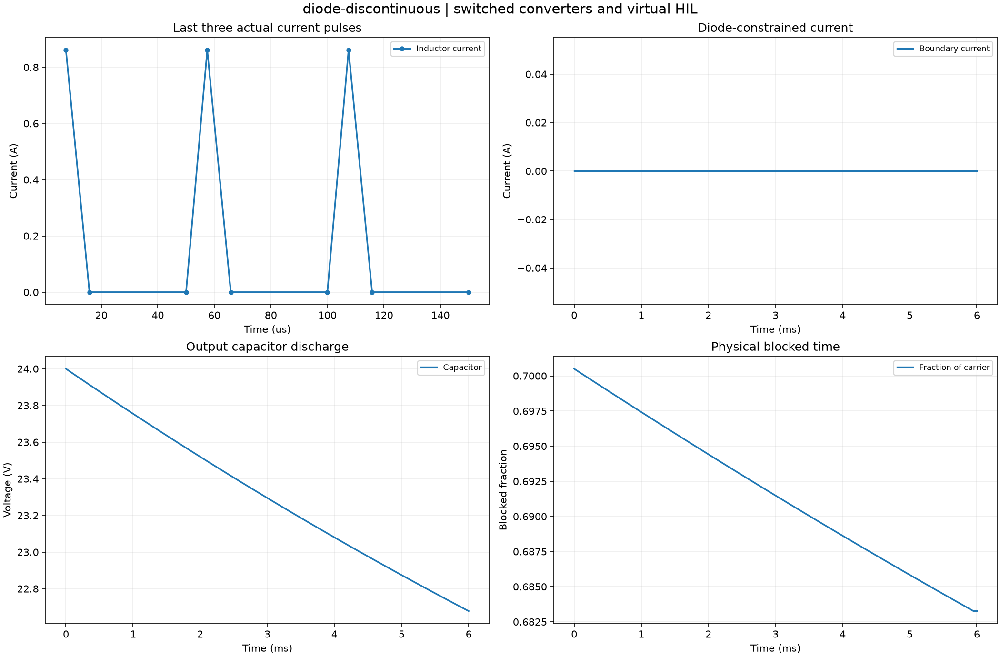

Reproducible switched converters and virtual HIL. Units and field components are printed on the scientific axes. peak d-q quantities use exp(+i omega t); terminal currents point into the protected line.
Sealed numeric archive | Summary CSV | Physical parameters | Run request | Source and environment

| energy_residual_j | 1.2299189444675562e-15 |
|---|---|
| max_blocked_fraction | 0.7005042540394616 |
| minimum_boundary_current_a | 0.0 |
These are simulations, not hardware measurements. Network-model, measurement, timing and statistical uncertainty require distinct convergence checks. Singular or unilluminated data use explicit masks.
Source revision: e37760b740c42b9052fd24c1a442a5d305f0001f.
Dirty checkout: False.
Configuration SHA-256: 7684b4a37e4cee0f0ceab1ff36700fa9d3c3067ec71acc73acc81aaa10fd72cc.
Replay preserves original source and parameter provenance. SHA-256 manifests detect changed bytes; they are unsigned integrity records, not certificates of physical validity.